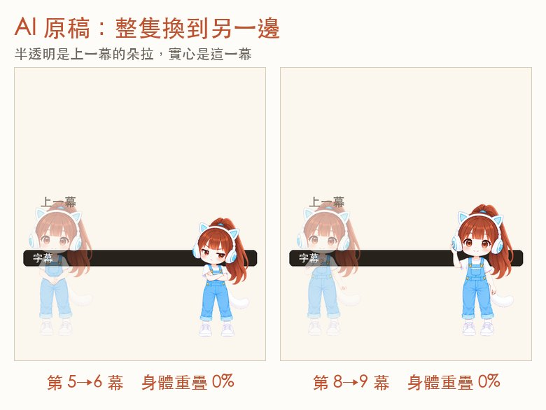
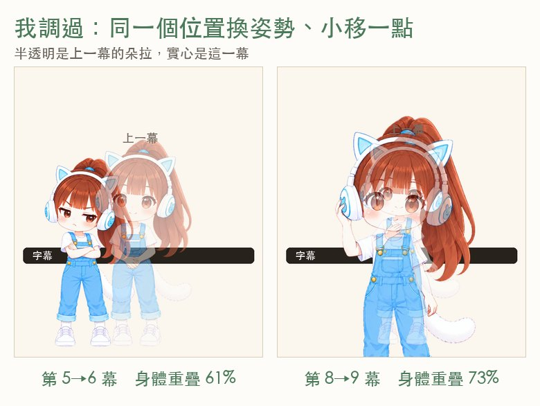

AI 幫我把一支短影音剪好，角色朵拉 11 幕的臉都被字幕壓到，位置還一幕左、一幕右來回跳。我覺得不對，就先在剪輯台親手把朵拉調一次，叫它把數字存下來、分析我為什麼這樣調；它分析不到位的地方我再糾正，最後把「微調」這種說不清楚的話量成數字，寫成一支用尺寸計算的檢查程式，放回它的剪輯規則裡。這篇把錯的版本跟對的版本都攤開來，其中我覺得最重要的一課，是分清楚通則跟個例。
- 用 AI 剪影片、做短影音，成品總是差一點，又說不清楚差在哪的人
- 已經會跟 AI 說「改一下」，但同樣的錯下一支片又出現的人
- 想把自己的剪輯眼光、版面判斷交給 AI 或助理照做的講師、創作者、一人公司
- 我教 AI 剪片實際走過的七個步驟，從自己動手改到寫成檢查
- 把「微調」「不要擋到臉」這種感覺翻成 AI 算得出來的數字的做法
- 分清楚通則跟個例：抓出 AI 把「這支片剛好如此」寫成「一律如此」的地方
- 什麼時候直接用尺寸算就好，不用叫 AI 一張張截圖看
- 一張對照表：這次七步怎麼對應到隱性知識提煉，換到其他 AI 員工也能照著走
- 文末一段可以直接貼給 AI 的提示詞
- 1我先自己動手改一次
這次：AI 剪的朵拉，臉被字幕壓到、左右亂跳。我在剪輯台把 11 幕的朵拉一個一個拖過、調大小。
- 2AI叫 AI 先記住
這次：我說「請你先記住。」AI 把每一幕我改之前、改之後的位置和大小，存進它的記憶檔。
- 3AI叫 AI 分析我為什麼這樣改
這次：AI 歸納出五條規律，例如「臉全部在字幕上方」「畫面內容越少，朵拉越大」。
- 4我我糾正它的分析
這次：我指出「臉在字幕上方」只是這支片剛好如此，圖表很滿時，朵拉可以小小的放在字幕下方；也補上它沒看到的：畫面要連續，不要忽左忽右。
- 5AI把模糊的話變成數字
這次：我問「到底怎麼叫微調？」AI 用我改的 11 幕算出門檻：相鄰兩幕，朵拉的身體要重疊一半以上。
- 6AI寫成檢查程式
這次：「字幕壓到臉」和「忽左忽右」兩件事，寫成一支程式用數字算，不用截圖看。
- 7AI放回剪輯規則
這次：寫進剪輯台的規則手冊。下一支片剪完、給我看之前，先跑這支程式。
AI 剪好的短影音，角色 11 幕的臉全被字幕壓到
這支片是〈朵拉：大模型怎麼訓練出來 為什麼別無腦信 AI〉，直式、86 秒。朵拉是我的 AI 角色，每一幕站在畫面下方講解，字幕固定在畫面靠下的同一個高度。
我做短影音的方式是：AI（這次是 Claude）把素材、配音、字幕剪好，接進我的「剪輯台」。剪輯台是我請 AI 做的一個網頁，整支片每一幕都在上面，我可以在瀏覽器裡直接預覽、拖位置、改字，存檔後再匯出影片。
這次 AI 交給我之前有自己檢查一輪，可是它截圖檢查的那幾張，剛好都是沒有朵拉的畫面。我一打開就看到了：
「你沒發現，朵拉的臉被字幕遮到了嗎？」「好幾個。」
（這篇引號裡是我當時口述的原話，經語音辨識轉成文字；整理時補了標點、改了辨識錯的字，意思沒動。）
後來用程式算，是 11 幕全部。第二個問題是位置：朵拉第 1 幕站右邊、第 2 幕跳到最左邊、第 3 幕又回到右邊，整支片左右來回跳。
同一份畫面、同一份字幕，只動了朵拉的位置和大小。兩支聲音不一樣是刻意的：草稿階段要一直改，用免費的電腦語音比較省錢；內容確定了，我才錄成比較好聽的聲音。
同一份資料，我也讓另一家 AI（Google 的 Gemini 4 Neon）獨立剪了一版。用後面會講的同一支程式檢查，它那版有朵拉的 8 幕也全部壓到臉。兩家都一樣，代表「字幕跟角色會不會疊到」這件事，AI 剪的時候沒有在算。
AI 自己檢查為什麼沒抓到：截圖抽錯張，內建檢查又默默跳過
回頭追原因，有三個。
| 哪裡漏了 | 實際發生什麼 |
|---|---|
| 截圖檢查是抽樣 | AI 截了幾張畫面來看，剛好都沒有朵拉。抽到的那幾張沒問題，它就當全部沒問題。 |
| 內建的自動檢查一直沒在跑 | 剪輯台裡本來就有一道「字幕壓到臉」的檢查。可是它要知道臉在角色圖裡的哪個位置，這支片接進剪輯台的流程沒有把這份資料帶進去，所以那道檢查每次都默默跳過，不報錯也不擋。這次追下去才發現。 |
| 一句話被寫成固定做法 | 剪輯規則裡原本寫著「每幕左、中、右輪換」，那是 11 月 17 日我說「希望朵拉的位置，短影音裡可以更多變靈活」之後記下的做法。這支片的初稿就照這條，朵拉一幕右、一幕左地換邊。 |
第三個最值得記下來。我當時說的是「多變靈活」，到了規則裡變成每一幕都要換邊，剪出來就是忽左忽右。
字幕會不會壓到臉，用尺寸算得出來，不用截圖
我要 AI 設計一個檢查機制，但我特別交代：
「我希望不是用截圖的。」「應該是可以用尺寸比例去估，這樣會比較快吧？」
後來我講得更完整：
「朵拉的臉的比例尺寸是固定的，字幕的比例尺寸是固定的，應該直接用算就可以算出來了。用數學去計算，絕對是會更便宜。」「所以有些素材的位置跟什麼的，盡量可以用數學去計算就用數學去計算，因為這樣子更省 token，也更快速、更準確，不要一直截圖去看。」
叫 AI 截圖檢查，等於每一張畫面都要它重新看圖、辨識一次。截圖去辨識圖片，又慢、又貴、又不準，而且很抽象，它看完說「沒問題」，你也不知道它到底看了哪裡。
所以我要它把這件事量化成數字。朵拉這張圖不管換什麼姿勢，臉差不多都在同一塊位置；字幕的位置和大小也是固定的；每一幕朵拉放在哪、放多大，剪輯台本來就記著。這三樣都是現成的數字，臉會落在畫面哪裡直接算得出來，再看它跟字幕有沒有疊到就好：臉跟字幕的框，距離不到 8 像素就算壓到。
整支片 11 幕一次算完，一張圖都不用截，算出來 AI 原稿 11 幕全部壓到臉。
同一支程式還順手做了一件事：把「臉在圖裡的位置」寫進剪輯台，原本一直默默跳過的那道內建檢查，從此有資料可以算了。
AI 接著用這支程式把每一幕的朵拉上下挪開。挪完臉是露出來了，但每一幕都剛好貼著字幕邊緣，左右來回跳的問題也還在。接下來我自己動手調。
- 讓 AI 只做需要判斷的事，其他交給程式：字幕會不會壓到臉，就是那篇講的「完全不用判斷」那一種，該寫成程式，不該每次叫 AI 重看。
我親手把角色位置調一次，叫 AI 先存下來，再分析我為什麼這樣調
我在剪輯台裡把 11 幕的朵拉一個一個拖過、調大小，然後跟 AI 說：
「我移動了朵拉圖片，調整大小位置。」「請你先記住。」「然後思考分析，為何我這麼移動。」「我的規律跟邏輯。」
順序是先記住、再分析。AI 先把每一幕我調之前、調之後的位置和大小寫進它的記憶檔，再開始分析。數字先存下來，後面分析說錯的時候，糾正有原始數字可以對照。
AI 分析我調角色位置的規律：哪幾條說對，哪幾條我糾正
AI 從這 11 幕的數字歸納出五條規律。我逐條回它：
| AI 的分析 | 我怎麼回 |
|---|---|
| 1. 全部放大，大約是畫面寬的一半到九成 | 沒有另外改，後來併進「大小跟畫面資訊量走」 |
| 2. 臉全部在字幕上方 | 更正：「所以並沒有臉一律在上方。如果今天這個圖表很滿的話，那朵拉，也可以小小的，放在字幕下方。」 |
| 3. 腳站在畫面底，內容少的幕放到半身、腳出框 | 沒有另外改 |
| 4. 頭頂貼著上方內容的下緣，內容越少朵拉越大 | 確認：「所以像這個東西比較空，朵拉就可以大一點；如果資訊比較多，那朵拉就是小一點。」 |
| 5. 右側有紅章的幕移到左邊避開，其他往中間收 | 補上它沒看到的：「因為我們畫面是連續的……一下朵拉跳左邊，一下朵拉跳很右邊……會有點煩。」「可是應該我每次的位置就是微調。」「……換個姿勢，就換個動作這樣子，比如在旁邊像在中間……就是永遠是全身，現在是半身。」「我不是忽左忽右這樣子。」 |
第 5 條是 AI 看到了每一幕各自在哪裡，沒看到相鄰兩幕之間的關係。我在意的是畫面連續，朵拉的變化靠換姿勢、全身換半身、在旁邊和中間之間小移動，不靠換邊。
AI 據此把規則改寫成「鏡位連續，每幕只微調」。我看完又問了一句：
「那個微調會不會寫得太空泛了？到底怎麼叫微調？」
AI 很常見的錯誤：把個例寫成通則，通則跟個例要分清楚
上一節 AI 歸納的「臉全部在字幕上方」，這支片確實 11 幕都是這樣，但那是這支片剛好如此，換一支圖表很滿的片馬上不成立。
這就是把個例寫成了通則：
- 通則：每一支片都要守的。
- 個例：只有這支片、這個畫面才成立的做法。
AI 手上只有這一支片的數字，它看到 11 次一樣，就很容易寫成「一律」。所以我的做法是三步：
- 每一條規律都問一句：這是這支片剛好如此（個例），還是每支片都要這樣（通則）？
- AI 如果分不清楚，就跟它講：哪些是通則、哪些是個例。
- 能夠成為通則的，盡量提煉成通則：個例往上多問一層「為什麼這樣做」，找到背後每支片都成立的那一條。
這支片實際提煉出來的對照：
| 這支片看到的（個例） | 提煉成的通則 |
|---|---|
| 11 幕的臉都在字幕上方 | 字幕不能壓到臉；臉在字幕上方或下方都可以 |
| 大字那幾幕，朵拉放到半身、放很大 | 朵拉的大小跟畫面資訊量走：資訊少朵拉大，資訊多朵拉小 |
| 第 2、6 幕右邊有紅章，朵拉站到左邊 | 避開畫面上的重點 |
| 多數幕朵拉往中間收 | 鏡位連續，每一幕只微調，不忽左忽右 |
左欄換一支片就失效，右欄每支片都用得上。寫進剪輯規則的，是右欄的通則。
角色位置「微調」到底是多少？用我調的 11 幕量出門檻
AI 被我糾正之後，在規則裡寫下「鏡位連續，每幕只微調」。看起來寫對了，其實這是回寫技能包很常見的坑。我當時說：
「AI 知道要微調，它就寫微調，這樣有寫跟沒寫一樣……不知道到底微調怎麼調，到底多微，對不對？」「所以我們就要具體把微調這件事情給量化，一個具體的判斷跟標準。」
同一個「微調」，其實有三種講法：
| 誰在講 | 怎麼講 | 下一支片 AI 照得做嗎 |
|---|---|---|
| 我 | 「我每次的位置就是微調。」只說了每次移一點，沒說移多少 | 做不到。AI 不知道「一點」是多少 |
| AI 第一次寫進規則 | 「鏡位連續，每幕只微調」 | 做不到。寫了跟沒寫一樣，它不知道多微才算 |
| 量化之後 | 相鄰兩幕，朵拉的身體要重疊一半以上；重疊不到兩成，就是忽左忽右 | 做得到。程式算得出來，每次判斷都一樣 |
AI 用我調的 11 幕定了一個量法：相鄰兩幕，朵拉的身體左右重疊多少。重疊的寬度除以兩隻朵拉裡比較寬那隻的寬度，100% 代表站在同一個位置，0% 代表完全換到另一邊。
實線框是上一幕的朵拉，虛線框是這一幕。
把真的朵拉疊起來看更清楚。下面兩張，半透明的是上一幕的朵拉，實心的是這一幕：


AI 原稿是一直跳來跳去；我調過的版本，看起來像朵拉稍微換個姿勢、稍微靠近一點。
怎麼看這張圖：條越長，代表兩幕之間朵拉移得越少；過了 50% 那條線就是微調，連 20% 那條線都沒過，就是忽左忽右。
兩個版本差在這裡：
- AI 原稿十組相鄰幕裡，九組重疊不到 20%，其中六組是 0%，也就是整隻換到另一邊。
- 我調過的版本十組都在 23% 以上，一半以上超過 60%。
- 換成朵拉中心點左右移動的距離：AI 原稿平均每換一幕移 253 像素，我的版本平均 98 像素（畫面寬 540）。
從這組數字定出來的門檻是：
| 相鄰兩幕重疊 | 算什麼 |
|---|---|
| 50% 以上 | 微調，可以 |
| 20% 到 50% | 只有為了避開畫面重點時可以（例如右邊有紅章就站左邊），列成警告，要寫原因 |
| 不到 20% | 忽左忽右，擋下來，要改 |
| 大小變化超過 0.6 倍到 1.6 倍 | 列成警告 |
我調的版本落在 20% 到 50% 的有三組：第 1 到 2 幕、第 2 到 3 幕、第 6 到 7 幕。三組都跟第 2 幕、第 6 幕右側有紅章、朵拉站到左邊避開有關。
但一定要先定下來。我當時是這樣說的：「我們可以說我們先這麼做，這不是絕對的值，但是先有一個基礎。這樣子有這個判斷之後，我們後續就可以更好的去修正、去補充、去改變，或再去疊加。總是有一個起點，或總是有個錨點……如果我們一開始沒有定這個點，那我們就永遠沒有校準的可能性了。」
量好的數字寫成檢查程式，放回 AI 的剪輯規則
最後一步是讓下一支片不用再教一次。AI 把兩項檢查寫成同一支程式，放進剪輯台的技能包（技能包是我給 AI 的工作規則手冊，剪片時它會照著做）：
- 字幕壓臉：用臉的位置跟字幕的位置算，疊到就擋。
- 鏡位連續：用相鄰兩幕的重疊比例算，照上面的門檻分成可以、警告、擋。
技能包裡也寫進四條擺位規則：大小跟畫面資訊量走、字幕不壓臉、鏡位連續每幕只微調、能用數學算的位置就用數學算不截圖。原本那條「每幕左、中、右輪換」標成過時。AI 剪完片的自我檢查清單多了一題：接進剪輯台之後、開給我看之前，先跑這支程式，貼結果，不截圖。
這次改動有找另一家 AI（Google 的 Gemini 4 Neon）審過一輪，判定要修正，抓出幾個問題：程式在發現壓臉時沒把鏡位的結果印出來、往上挪沒有設上限、計算重疊比例時，要以兩幕裡比較寬的那隻朵拉為基準。都改了才收。
三個版本跑同一支程式的結果：
| 版本 | 字幕壓到臉 | 鏡位連續：擋 | 鏡位連續：警告 |
|---|---|---|---|
| AI 原稿 | 11 幕全部 | 9 組 | 0 |
| AI 用程式挪過臉之後（我還沒動） | 5 幕（臉剛好貼著字幕邊緣） | 9 組 | 0 |
| 我親手調過 | 0 | 0 | 3 組（都跟避開紅章有關） |
- 寫了一堆規則給 AI，為什麼還是沒人執行？：把檢查掛進「接進剪輯台之後、給我看之前」這個時間點，就是那篇講的把規則掛在既有流程上。
- 我明明都講過了，AI 為什麼還要再問我？：把重複的判斷寫成標準、讓 AI 自己檢查自己，這篇是同一件事用在剪片上。
教 AI 剪片，就是在提煉隱性知識：訓練一個 AI 剪輯師的過程
回頭看這整段，我做的事情就是平常在教的「隱性知識提煉」，也是我訓練 AI 員工的方法。這次要訓練的員工，是一個 AI 剪輯師。
隱性知識，是你會做、看一眼就知道對不對，但說不出為什麼的那種判斷。朵拉該站哪裡、該多大，我是動手調出來的，當下並沒有一套寫好的規則；連我自己講的「微調」，也說不出到底是多少。沒寫下來的東西，AI 學不到。
而且這次要提煉的還是畫面感覺，很抽象。我的想法是：
「哪怕是這種抽象的圖片，我們還是可以去提煉。它這種抽象的圖片跟感覺，我們還是可以把它提煉出來。」
把這次的七步，對回隱性知識提煉的做法：
| 這次實際做的 | 對應的提煉做法 | 為什麼要這樣做 |
|---|---|---|
| 說不清楚哪裡不對，我先動手調一次 | 說不出來的，先示範 | 判斷藏在做法裡。做一次，判斷就留在結果上了 |
| 叫 AI 先把改前改後的數字存下來 | 先留下可以對照的原始紀錄 | 後面分析說錯的時候，有東西可以對 |
| 叫 AI 分析我為什麼這樣調 | 讓 AI 把看到的規律說出來 | 它說出來，我才看得到它理解成什麼樣子 |
| 糾正它把「這支片剛好如此」寫成「一律如此」 | 分清楚通則跟個例 | 個例換一支片就失效，寫進規則的要是通則 |
| 問它「到底怎麼叫微調」 | 形容詞換成具體的判斷跟標準 | 寫「微調」等於沒寫，下一個 AI 不知道多微 |
| 門檻先標草案，不等完美 | 先定錨點 | 有起點，才能在上面修正、疊加、校準 |
| 寫成檢查程式，放回剪輯規則 | 讓判斷可以被下一個 AI 照著做 | 不靠人每次重講 |
這個順序不只能用在剪片。只要是「我會做、但說不清楚」的工作，訓練 AI 員工的時候都可以照這樣走：你先做一次，讓它存、讓它分析、你糾正，再把說不清楚的形容詞變成標準。
- 如何訓練自己的 AI 員工：員工＋顧問框架：這篇是其中一個員工（AI 剪輯師）實際被訓練的過程，那篇講整體怎麼帶 AI 員工。
- 訓練 AI 員工的四個層次：從自己會用，到讓 AI 幫你訓練 AI；這次寫回剪輯規則、讓下一個 AI 照做，就是往上走的那一步。
用數學檢查剪片，哪裡有把握，哪裡還是草案
有把握的部分：字幕會不會壓到臉，是純粹的尺寸問題。只要臉在角色圖裡的位置量對了，答案就是準的，而且 11 幕一次算完，不用一張張截圖叫 AI 看。
還沒把握的部分：
- 「微調」的門檻是從一支片、11 幕、我調一次算出來的，我還沒改過數字。
- 臉的位置只量了朵拉現在這組站姿。換角色、換成坐姿或側身，要先重新量臉在圖裡的哪裡。
- 字幕只算一行。剪輯台本來就把字幕換行當成錯誤擋下來，所以一行夠用；如果你的影片允許兩行字幕，算法要跟著改。
- 程式只算兩件事：字幕有沒有壓到臉、相鄰兩幕有沒有跳太遠。朵拉的大小跟畫面資訊量配不配、有沒有擋到畫面重點，程式沒有算，還是靠人看。
今天就能開始：下次 AI 剪錯，先自己改一次，再叫它分析
不一定要有剪輯台。剪輯軟體裡顯示位置、縮放數字的地方，或 AI 給你的設定檔，都可以拿來做。
- 不要只說「改一下」。自己動手改一次，拖位置、改大小都算。
- 叫 AI 把你改前改後的數字存下來，列成表給你看。
- 叫 AI 說出你為什麼這樣改，每一條規律都要附上是哪幾幕的數字支持它。
- 逐條糾正。每一條都問：這是這次剛好如此（個例），還是每次都要這樣（通則）？特別注意它說得太絕對（「一律」「全部」）跟太空泛（「微調」「適當」）的地方。能提煉成通則的，請它往上提煉。
- 空泛的詞，叫它用你改的數字量出門檻。
- 能用尺寸、座標算的檢查，叫它寫成程式，不要每次截圖看。
- 放回它的工作規則，並且講好什麼時候跑：剪完、給你看之前。
第 6 步不用自己會寫程式。程式由 AI 寫，你看的是它跑出來的結果：哪幾幕擋到、相鄰兩幕差多少。
可以直接貼給 AI 的版本：
我剛手動調整了影片裡〔角色／字幕／素材〕的位置和大小。 1. 先把我調整前、調整後每一幕的數字（位置、大小）存起來，列成表給我看。 2. 分析我為什麼這樣調，列出你看到的規律，每條都附上是哪幾幕的數字支持它。 3. 我會逐條糾正。改完之後，把規律裡「微調」「不要太大」「避開」這類形容詞，用我調的數字算出門檻。 4. 能用尺寸和座標算的檢查（會不會擋到、相鄰兩幕差多少），寫成一支程式，不要用截圖檢查。 5. 用這支程式分別檢查調整前和調整後的版本，把結果貼給我。我確認之後，再寫進你的剪輯規則，並寫清楚每次剪完、給我看之前要先跑。
「逐條糾正」這一步最花時間。這次 AI 歸納的五條裡，就有一條是把「這支片剛好如此」寫成「一律如此」，要人一條一條指出來。
這篇提到過的
再往前後延伸
- 用 Claude Code 剪影片，配樂從哪來、怎麼卡在拍子上？：用 AI 剪片的另一半，配樂、旁白與卡點
- 做過筆記也建過知識庫，還缺什麼？：把知識當員工，答案落在隱性知識提煉
- AI 交出一份很專業的分析，但它根本沒看過那支影片：AI 說它檢查過、看過，跟它真的看過是兩回事